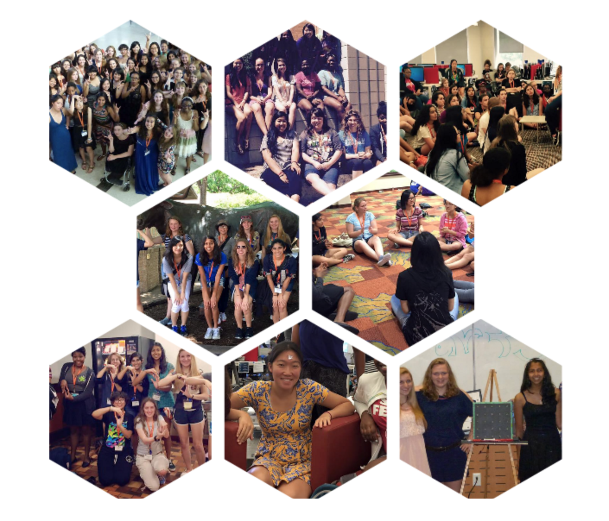

What is First Bytes?
During the summer of 2015 before my freshman year of college, I had the amazing opportunity to serve as a Residential Assistant (RA) at the University of Texas's First Bytes camp. I was a camper myself back in 2013, and the group of friends and learning experiences gained from camp is truly indescribable.
First Bytes aims to expose high school girls to the evolving field of computer science by placing them in small groups led by college-aged girls interested in technology. The program has a busy schedule of guest speakers from all ranges of industry, hands-on workshops such as taking apart computers and engineering challenges, and field trips to companies such as vmWare (Austin campus). A big component of the program includes the team project, where girls are assigned groups of four to work on coordinating flashing lights to music using Arduino lightboards. Girls with little to no programming experience work with those with more experience so everyone has a chance to learn from each other. Campers use UTCS's state-of-the-art computing facilities in the Gates-Dell Complex, which houses a computer lab that First Bytes uses.
A week of bonding, challenges and friendship.
My First Bytes Experience
During my week as an RA, I had the responsibility of leading 12 girls along with a peer Program Advisor (PA) who was in her second year of college at the time. The girls came from all areas of Texas and were juniors and seniors in high school.
I remember the group was pretty quiet the first day since no one knew each other yet but icebreakers and get to know you games helped. However, as the week went on, there were more inside jokes, laughs and GroupMe messages than I could count. I bonded really well with these girls, as I was in their shoes just two years ago, and loved to see their passion for computer science grow. I also made great friends with the camp staff, some of who had also been campers my year. I gave a presentation on my research and mental health advocacy projects, since each staff member had to give a debrief on a tech field or interest of theirs. During our very limited free time, I would take the girls around to explore downtown Austin, go bowling or play volleyball at UT's underground recreation area, or grab meals with them around campus. Although busy, this week was one of the most fun and enjoyable of my life. I was very lucky to have the opportunity to introduce STEM, what may become a valuable career opportunity and lifetime investment, to girls interested in it. Giving them a glimpse into the life of a computer scientist offered room to grow for everyone.